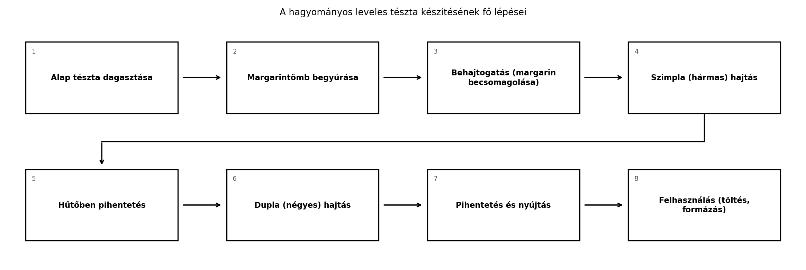

A leveles tészta a pék egyik legszebb „építő” feladata: ugyanabból a lisztből, vízből és zsiradékból olyan terméket hozunk létre, amely sütés közben vékony, ropogós lapokra válik szét. Reggeli leveles pogácsa, túrós batyu, krémes, vajas tekercs vagy sajtos rúd készítésekor mindig ugyanaz a kérdés: miért lesz a tészta leveles, és mitől nem folyik ki a margarin sütés közben? Ebben az alfejezetben a hagyományos margarintömbös és a kész leveles margarinos hajtogatást, a zsiradék- és rétegszámítást, valamint a hűtés-nyújtás-hajtogatás fegyelmét tanuljuk meg.
Képzelj el egy könyvet, amelynek lapjai lisztből és margarinból készültek. A behajtogatáskor egy margarinlapot becsomagolunk tésztába, így lesz egy „margarin-könyvjelző” két tésztalap között. Ha ezt a csomagot kinyújtjuk és háromba hajtjuk, a margarinlapból három különálló vékony réteg lesz. Ha újra kinyújtjuk és háromba hajtjuk, már kilenc margarinréteg válik el egymástól. Sütés közben ezek a rétegek nem olvadnak össze akkor, ha a margarin hideg és a tészta is hideg, a nyújtást pedig mindig hagyjuk „pihenni” a hűtőben. Az alábbi folyamatábra a hagyományos leveles tészta fő lépéseit mutatja.

A folyamat lényege: a zsiradékot nem beledagasztjuk a tésztába, hanem rétegekben helyezzük el, és a tésztát ismételt hajtogatással úgy rétegezzük, hogy a zsiradék vékony filmeket alkosson. Sütéskor a tészta nedvessége gőzzé alakul, a gőz pedig a zsiradékból kialakult zárófelületek között szétfeszíti a tésztalapokat.
Definíció. A leveles tészta olyan zsiradékkal rétegezett, hajtogatott tészta, amelynek lazítását nem élesztő vagy kémiai lazítóanyag, hanem elsősorban a sütés közben keletkező vízgőz és a benne lévő vékony zsiradékrétegek adják.
A leveles tészta akkor működik jól, ha a sütő hője először a külső rétegeket melegíti fel. A tésztában lévő víz gőzzé alakul, és a gőz a legkisebb ellenállás felé, vagyis a tésztarétegek közé préselődik. A margarinrétegek azért fontosak, mert egyrészt elválasztják a tésztalapokat, másrészt a zsiradék hő hatására megolvad, de a gőz által emelt tésztalapok között ideiglenesen zárófelületet ad. A tészta sikérváza ugyanakkor megmerevedik, így a rétegek nem esnek össze.
A jó leveles tésztára a következő jellemzők igazak: - sok vékony, szabályos zsiradékréteg; - hűvös, nem ragacsos tészta; - pihentetés után könnyen nyújtható, de nem rugalmatlanul kemény; - sütés közben erőteljes térfogatnövekedés; - kész állapotban ropogós, leveles szerkezet, nem zsírosan összeesett bélzet.
A hagyományos leveles tésztánál a hajtogató zsiradékot nem önmagában használjuk, hanem margarintömböt készítünk belőle.
Definíció. A margarintömb olyan plasztikus, hideg állapotban is nyújtható zsiradéklap, amelyet hajtogató margarinból és kisebb mennyiségű lisztből gyúrunk össze. A liszt szerepe az, hogy a margarin a nyújtáskor ne folyjon ki, és a tömb állaga hasonló legyen az alaptésztáéhoz.
A gyakorlatban a margarintömböt gyakran 3:1 vagy 2:1 margarin:liszt arányban készítjük. A 3:1 azt jelenti, hogy 3 rész margarinhoz 1 rész lisztet gyúrunk. Például 600 g hajtogató margarinhoz 200 g lisztet teszünk, így a tömb 800 g lesz, és a margarintömb lisztje a teljes lisztadagból származik. Ha erről megfeledkezünk, a tészta száraz, kemény lesz, mert a teljes lisztmennyiséget az alaptésztába tettük.
A hagyományos módszer lépései:
Alaptészta dagasztása. A lisztet, a vizet, a sót és egy kevés tésztamargarint viszonylag rövid ideig dagasztjuk, hogy a sikérszálak kialakuljanak, de a tészta ne melegedjen fel. Célszerű 18–20 °C körüli tésztahőmérsékletet elérni (ellenőrizendő: üzemi technológiai lap). A tészta félkemény legyen, mert a hajtogatáskor a margarinnal együtt kell nyúlnia.
Margarintömb begyúrása. A hideg, de plasztikus margarint a kimért liszttel óvatosan összegyúrjuk. A tömb hőmérséklete legyen hasonló az alaptésztáéhoz. A túl hideg margarin törik, a túl meleg kenődik, így sütéskor a rétegek összeolvadnak.
Behajtogatás. Az alaptésztát téglalap alakúra nyújtjuk, a margarintömböt a tészta közepére helyezzük, majd a tészta széleit ráhajtjuk. A széleket jól zárjuk, hogy a margarin ne folyhasson ki.
Szimpla hajtás. A behajtogatott tésztát hosszanti irányban óvatosan kinyújtjuk, majd három egyenlő részre hajtjuk: a bal harmadot középre, a jobb harmadot rá. Ez a szimpla (hármas) hajtás. A hajtás szélét a tésztába simítjuk, majd a tésztát letakarva hűtőbe tesszük.
Dupla hajtás. A pihentetett tésztát 90°-kal elforgatva ismét kinyújtjuk, majd négy rétegbe hajtjuk: a két szélét középre, majd az így kapott lapot félbehajtjuk. Ez a dupla (négyes) hajtás.
A gyakorlatban a hajtogatási tervet mindig a termék megkívánja, például: - 2 szimpla hajtás: finomabb, kevésbé „papírszerű” levelesség; - 2 dupla hajtás: erőteljesebb, ropogósabb leveles szerkezet; - 1 szimpla + 1 dupla hajtás: kiegyensúlyozott, gyakran használt ipari változat.
A 3–5. lépés kézi fogásait az alábbi képsor mutatja egy 1 szimpla + 1 dupla hajtásos terven: az 1–3. kocka a behajtogatás, a 4–5. a szimpla hajtás, a 6. a hűtés, a 7–8. az elforgatás és a dupla hajtás. A kockák sarkában a margarinrétegek száma (R) olvasható.
Figyeld meg, hogy a hajtás neve nem a hajtások száma: a szimpla (hármas) hajtás egyetlen művelet, amely a rétegeket háromszorozza. A rétegszám kiszámítását az alfejezet „Rétegszámítás” része és az ott látható kalkulátor mutatja. A HTML-kiadásban a képsor lépésenként nagyítható.
Ha a margarin és a tészta hőmérséklete vagy állaga eltér (2. lépés), a hiba csak a sült terméken látszik. Az alábbi négy metszet a szabályos levelességet és a három leggyakoribb hibát hasonlítja össze.
A 2. metszet a túl meleg, a 3. a túl hideg margarin következménye; a 4. hiba a behajtogatás (3. lépés) hanyagságából ered, ha a tömb és a tészta közé levegő szorul.
A modern pékségekben gyakran nem gyúrnak külön margarintömböt, hanem kész leveles vagy húzómargarint használnak. A két kifejezés a gyakorlatban gyakran keveredik, de a technológiai szerepük hasonló.
Definíció. A leveles margarin olyan magasabb olvadáspontú, plasztikus sütőmargarin, amelyet kifejezetten hajtogatott tésztákhoz fejlesztettek ki. A húzómargarin ennek lágyabb, kenhetőbb változata, amely hideg állapotban is jól nyújtható és kevésbé törik.
A leveles margarinos eljárásban a margarint nem keverjük liszttel, hanem temperáljuk, azaz a hűtőből kivéve addig pihentetjük, amíg a nyújthatósága és az alaptészta állaga összeillik. A leveles margarint általában hideg, de nem jéghideg állapotban használjuk. A gyártó adatlapja megadja az ajánlott feldolgozási hőmérsékletet (ellenőrizendő: gyártói adatlap).
A margarintömbös hagyományos eljárás előnye, hogy a lisztbevitel miatt a tömb kevésbé folyik ki, és a kész tészta „vajas” jellege hangsúlyozható. A kész leveles margarinos eljárás előnye a gyorsabb, egyenletesebb munka, valamint az, hogy a zsiradékrétegek vastagsága jobban szabályozható nagyüzemi nyújtógéppel.
A leveles tészta receptúrájában a hajtogató zsiradékot általában lisztre vetített százalékban adjuk meg, ugyanúgy, ahogy a Szakmai alapszámítások fejezetben tanultuk. A liszt 100%, és ehhez viszonyítjuk a hajtogató margarint.
Összefüggés. Ha a hajtogató zsiradék lisztre vetített aránya (%), akkor a szükséges margarin tömege:
ahol a teljes lisztmennyiség, pedig a hajtogató margarin tömege.
Ha hagyományos margarintömböt készítünk, akkor a tömbbe arányban kerül margarin, a maradék pedig liszt. A 3:1 arány azt jelenti, hogy a margarin a tömb tömegének része, a liszt pedig része. A tömbbe kerülő liszt tömege:
ha az arány 3:1, általában pedig:
ahol .
Fontos. A margarintömbhöz használt lisztet le kell vonni az alaptészta lisztjéből, mert a teljes lisztmennyiségnek fenn kell maradnia a receptúrában. Az alaptésztához maradó liszt:
A leveles tészta levelességét a hajtogatás során kialakuló margarinrétegek száma határozza meg. Sütés közben elsősorban ezek a zsiradékfilmek választják el a tésztalapokat.
Definíció. A leveles tészta rétegszáma a behajtogatás utáni egyetlen margarinrétegből kiinduló, hajtogatásokkal megsokszorozott margarinrétegek száma. A tésztarétegek száma eggyel több, mert minden margarinréteg előtt és után tészta van.
Szabály. Egy szimpla (hármas) hajtás a margarinrétegek számát háromszorozza, egy dupla (négyes) hajtás négyszerezi. Ha szimpla és dupla hajtást végzünk, akkor a margarinrétegek száma:
A tésztarétegek száma közelítőleg , ha a margarinlapot mindkét oldalról tészta határolja.
Példa. Ha a behajtogatott tésztát először egyszer szimplán hajtjuk, akkor a margarinrétegek száma . Ha utána még egyszer szimplán hajtjuk, akkor margarinréteget kapunk. Egy szimpla és egy dupla hajtás esetén margarinréteg alakul ki. Két dupla hajtás esetén margarinréteget kapunk.
Az alábbi ábra a tészta oldalnézeti metszetét mutatja a behajtogatástól (R = 1) egy szimpla (3), egy dupla (12) és még egy szimpla hajtáson (36) át; a jobb oldali táblázat a fenti példákat foglalja össze.
A rétegszám nem a hajtások számával nő, hanem szorzódik: két hajtás után 9, 12 vagy 16 réteg lehet aszerint, hogy szimpla vagy dupla hajtást végeztünk. A HTML-kiadás kalkulátorában a „+ szimpla”, „+ dupla” gombokkal tetszőleges hajtássorrend kipróbálható; a sorrend a rétegszámot nem változtatja meg, csak a hajtások fajtája és száma.
A túl sok hajtogatás sem cél: a rétegek elvékonyodnak, a margarin a tésztába keveredhet, és a termék zsíros, kevésbé leveles lesz. A gyakorlatban élesztős hajtogatott tésztánál jellemzően 27–48, élesztő nélküli leveles tésztánál 100–250 körüli zsiradékréteget alakítanak ki (pl. 2 szimpla + 2 dupla = 144; tanulási példa, ellenőrizendő: hazai szakkönyv, üzemi technológiai lap), köztes hűtésekkel. A technológiai lap 12 rétege (1 szimpla + 1 dupla) ezért csak a számítás szemléltetésére szolgál, gőzlazítású leveles tésztánál gyenge levelességet adna; a gyakorlati útmutató és a technológiai lap ezért ezt a tervet rétegszámítási gyakorlatként (kis rétegszámú tanulási változatként) használja, nem kész termék receptjeként.
Adott: egy pékség 1000 g lisztből készít hagyományos leveles tésztát. A hajtogató margarin lisztre vetített aránya 60%. A tésztamargarin aránya a tésztában 4% a teljes lisztre vetítve, a víz 55%, a só 2%. A margarintömb 3:1 arányú.
Keresett: a hajtogató margarin, a tömb lisztje, az alaptészta lisztje, a víz, a só, a tészta margarin, valamint a teljes tésztatömeg.
Megoldás.
Ellenőrzés. A liszt összesen g, a hajtogató margarin 600 g, a tésztamargarin 40 g. A teljes tészta összetevőinek tömege g. Az összeg egyezik.
Adott: 2,400 kg lisztből leveles tésztát készítünk kész leveles margarinnal. A hajtogató margarin lisztre vetített aránya 70%. A tésztába kerülő margarin 5%, a víz 50%, a só 2%.
Keresett: a leveles margarin tömege, az alaptészta tömege és a teljes tésztatömeg.
Megoldás.
Ellenőrzés. A teljes zsiradék: kg, ami a liszt 75%-a. A tészta tömege nagyságrendileg reális: 10 kg lisztből kb. 22 kg leveles tésztát kapnánk a nagyobb adagoknál is.
Adott: behajtogatás után 1 margarinréteggel indulunk. A hajtogatási terv: 1 szimpla hajtás, majd 1 dupla hajtás.
Keresett: a margarinrétegek száma és a közelítő tésztarétegek száma.
Megoldás.
A margarinrétegek száma 12, a tésztarétegek száma közelítőleg .
Értelmezés. A 12 margarinréteg érezhető rétegességet ad, de gőzlazítású leveles tésztának még gyenge, és a tészta nem lesz „papíros”. Ha erőteljesebb levelességet szeretnénk, végezhetünk például 2 szimpla és 1 dupla hajtást:
Ekkor 36 margarinréteg alakul ki, ami finom, de nagyobb odafigyelést igényel a hűtésre és a nyújtásra.
A következőkben a hagyományos margarintömbös eljárást lépésenként, biztonsági és higiéniai szempontokkal együtt mutatjuk be. A paraméterek tanulási példák, ezért mindig a pékség technológiai lapját kell követni (ellenőrizendő: üzemi technológiai lap, gyártói adatlap).
Előkészítés és mérés. A lisztet, a vizet, a sót,
a tésztamargarint és a hajtogató margarint kimérjük. A vizet hűtött
formában, 4–8 °C körül használjuk, hogy a dagasztás után a tészta 18–20
°C legyen (tanulási példa, ellenőrizendő).
Higiénia. A munkaterületet, a mérleget, a kézi
eszközöket tisztán tartjuk. A lisztes pulton és a vágódeszkán
keresztszennyeződés nélkül dolgozunk.
Dagasztás. Az alaptészta összetevőit rövid,
közepes dagasztással összedolgozzuk. A dagasztási idő jellemzően 4–8
perc, de a cél a sima, egyenletes tészta.
Gépbiztonság. A dagasztógépet csak betanítás és a
gépkönyv ismerete után, felügyelettel szabad kezelni. A tészta
ellenőrzése közben soha ne nyúljunk a futó gépbe; a mintavételhez és az
állagvizsgálathoz állítsuk le a gépet.
Pihentetés. Az alaptésztát letakarva hűtőbe
tesszük, jellemzően 20–40 percre. A cél a sikérszálak relaxációja, hogy
a tészta később ne húzódjon vissza nyújtáskor.
HACCP és minőség. A hűtő hőmérsékletét rendszeresen
ellenőrizzük (pl. 5 °C alatt, ellenőrizendő: üzemi
HACCP-terv); ez élelmiszer-biztonsági előfeltételi program. A
pihentetés közbeni 20 °C-os tésztahőmérséklet-határ minőségi paraméter,
nem CCP: túllépése a leveles szerkezetet rontja, nem okoz egészségi
veszélyt.
Margarintömb begyúrása. A hideg, de formázható
margarinhoz a kimért lisztet adjuk, és óvatosan összegyúrjuk. A tömb
hőmérsékletét a tésztáéhoz igazítjuk, körülbelül 16–20 °C közé
(tanulási példa).
Allergén. A margarinok a gyártói összetétel szerint
tartalmazhatnak tejet, tejsavót, laktózt vagy tejszármazékot. A terméken
a tejallergént jelölni kell, ha az jelen van. A „mentes” termékeknél
kizárólag olyan margarint szabad használni, amelynek
allergén-összetételét a beszállító igazolta.
Behajtogatás. Az alaptésztát téglalap alakúra
nyújtjuk, a közepére helyezzük a margarintömböt. A tészta széleit
ráhajtjuk, hogy a margarin teljesen be legyen zárva.
Figyelem. A margarintömb és a tészta állaga hasonló
legyen. Ha a margarin túl hideg, törik; ha túl meleg, kilapul. A
behajtogatásnál a légbuborékokat óvatosan nyomjuk ki, mert a levegő
sütés közben egyenletlen hólyagokat okoz.
Első szimpla hajtás. A tésztát hosszanti
irányban, egyenletes nyomással kinyújtjuk körülbelül 8–10 mm
vastagságra, majd háromba hajtjuk.
Gépbiztonság nyújtógépen. Ha nyújtógépet használunk, a
védőrácsnak, a retesznek és a vészleállítónak működnie kell. A kéz
adagolásánál a hengerek közé tilos benyúlni. A tészta akadását csak
leállított gépen szabad megszüntetni.
Hűtés. Az összehajtott tésztát letakarva hűtőbe
tesszük 20–30 percre. A hűtés megakadályozza, hogy a margarin
megolvadjon és a következő nyújtásnál a tésztába ivódjon.
Minőség. A margarintömb hőmérsékletét a hajtogatás
előtt és után is célszerű mérni. Ha a tészta 22 °C fölé melegszik,
azonnal hűteni kell; ez minőségi határérték, nem CCP
(ellenőrizendő: üzemi határérték).
Második hajtás. A tésztát 90°-kal elforgatjuk,
kinyújtjuk, és dupla (négyes) hajtást végzünk.
Technológiai megjegyzés. A 90°-os elfordítás azért
fontos, mert a nyújtás iránya minden hajtogatásnál változzon, így a
tészta egyenletesebben nyúlik.
Végső pihentetés. A hajtogatott tésztát hűtőben további 30–60 percig pihentetjük, hogy a sikér megnyugodjon. Ezután a tészta formázható, tölthető vagy szeletelhető.
A leveles margarinos eljárás annyiban tér el, hogy a margarintömb begyúrása elmarad. A leveles/húzómargarint temperáljuk, vagyis néhány fokkal a hűtő fölé melegítjük, amíg könnyen nyújtható lesz. A margarint az alaptésztára helyezzük, behajtjuk, majd a hajtogatást ugyanúgy végezzük. A nyújtógép használatakor a hengerrést fokozatosan csökkentjük, hogy ne törjük össze a zsiradékrétegeket.
Előírás. A leveles margarin és a húzómargarin megnevezését, gyártmánylapját és tárolási hőmérsékletét a gyártó adatlapja szerint kell alkalmazni. Az élelmiszeripari zsiradékokra a Magyar Élelmiszerkönyv vonatkozó előírásai, a 1169/2011/EU rendelet szerinti összetevő- és allergénjelölés, valamint a zsiradékok nyomonkövethetőségi követelményei érvényesek (ellenőrizendő: hatályos Magyar Élelmiszerkönyv előírások, 1169/2011/EU rendelet, 178/2002/EK rendelet).
Cél: a hajtogatás és a rétegszámítás gyakorlása: 1000 g lisztből margarintömbös tészta előállítása 1 szimpla + 1 dupla hajtással (kis rétegszámú tanulási változat; kész leveles terméknél a hazai gyakorlat szerint több hajtás szükséges, ellenőrizendő: hazai szakkönyv, üzemi technológiai lap).
Eszközök és anyagok: BL 55 liszt, víz, só, tésztamargarin, hajtogató margarin, dagasztógép vagy kézi dagasztófelszerelés, hűtő, nyújtófa vagy nyújtógép, mérleg, hőmérő, tésztaleszedő kés, fedőfólia.
Higiénia. A gyakorlat előtt tiszta munkaruhát, hajhálót és zárt lábbelit veszünk fel. Az ékszereket levesszük. Kézmosás után a munkafelületet és az eszközöket ellenőrizzük. Sérült kézzel, hasmenéses vagy lázas állapotban nem dolgozunk élelmiszerrel.
Gépbiztonság. A dagasztó- és nyújtógépet csak betanítás után, felügyelettel kezeljük. A gépek bekapcsolása előtt megbizonyosodunk arról, hogy a védőrács, a retesz és a vészleállító működik. Tisztítani, ellenőrizni csak leállított, áramtalanított gépen szabad.
Lépések:
Mérjük ki a lisztet, a vizet, a sót, a tésztamargarint és a
hajtogató margarint.
Ellenőrzés: a liszt 1000 g, a víz 550 g, a só 20 g, a
tésztamargarin 40 g, a hajtogató margarin 600 g.
A margarintömbhöz vegyünk el 200 g lisztet a teljes lisztből. A
maradék 800 g lisztből, a vízből, a sóból és a tésztamargarinból
dagasszunk sima alaptésztát.
Ellenőrzés: a tészta hőmérséklete 18–20 °C, felülete sima, nem
ragad, de nem is kemény.
A 600 g margarint a 200 g liszttel gyúrjuk hideg, plasztikus
tömbbé.
Ellenőrzés: a tömb hőmérséklete hasonló az alaptésztáéhoz,
formázás közben nem törik.
Az alaptésztát téglalapra nyújtjuk, a margarintömböt ráhelyezzük,
behajtjuk. A tésztaszéleket jól lezárjuk.
Ellenőrzés: a margarin nem látszik ki, a tészta hézagmentesen
zár.
Első szimpla hajtás: a tésztát óvatosan kinyújtjuk kb. 8–10 mm
vastagra, majd háromba hajtjuk. A tésztát hűtőbe tesszük 20–30
percre.
Ellenőrzés: a tésztahőmérséklet 20 °C alatt marad, a margarin
nem olvad ki.
Második dupla hajtás: a tésztát 90°-kal elfordítva ismét
kinyújtjuk, négy rétegbe hajtjuk.
Ellenőrzés: a rétegek szabályosak, a tészta széle
sima.
Végső pihentetés hűtőben 30–60 percig.
Dokumentálás: a hűtési időt, a tésztahőmérsékletet és a
hajtogatási tervet rögzítjük a gyártási naplóban.
A lap rétegszámítási gyakorlat: a 12 margarinréteg kis rétegszámú tanulási változat, kész leveles terméknél több hajtás szükséges (ellenőrizendő: hazai szakkönyv, üzemi technológiai lap).
| Termék: | hagyományos leveles tészta alap |
|---|---|
| Tétel: | 1 szimpla + 1 dupla hajtás, kb. 2200 g nyers tészta |
| Felhasznált termékre: | leveles pogácsa, túrós batyu, sajtos rúd, krémes |
| Nyersanyag | Lisztre vetített % | Mennyiség (g) | Megjegyzés |
|---|---|---|---|
| BL 55 liszt | 100 | 1000 | ebből 800 g az alaptésztához, 200 g a margarintömbhöz |
| Víz | 55 | 550 | hideg, kb. 5–8 °C |
| Só | 2 | 20 | finom szemcséjű |
| Tésztamargarin | 4 | 40 | az alaptésztába |
| Hajtogató margarin | 60 | 600 | margarintömbhöz |
| Összesen | – | 2210 | a tömb és az alaptészta együtt |
Műveleti paraméterek: dagasztás rövid, 4–8 perc; tésztahőmérséklet 18–20 °C; pihentetés 20–40 perc; margarintömb 3:1 arányú (600 g margarin + 200 g liszt); hajtogatás 1× szimpla + 1× dupla; rétegszám 12 margarinréteg (tanulási példa; a hazai gyakorlatban élesztő nélküli leveles tésztánál több hajtás szokásos, ellenőrizendő: technológiai lap); hűtő hőmérséklete legfeljebb 5 °C (célszerű, ellenőrizendő: üzemi HACCP-terv); végső pihentetés 30–60 perc.
Allergén. A termék glutént (búzaliszt) és tejallergént (margarin, ha a gyártó szerint tej-származékot tartalmaz) tartalmaz. A tojásos lekenés esetén tojásallergén is megjelenik. A termék nem „mentes”, és a lisztpor miatt a mentes termékektől elkülönítve kell gyártani.
HACCP- és minőségi pontok. Előfeltételi program: a hűtő hőmérséklete. Minőségi paraméterek (nem CCP): a tészta hőmérséklete a hajtogatás előtt és után, a margarinrétegek épsége és a leveles szerkezet. CCP: a sütés (átsültség). A sütőből kikerülő termék maghőmérsékletét a HACCP-terv szerint ellenőrizzük (ellenőrizendő: üzemi határérték).
A kész leveles tészta minőségét a következő jellemzőkkel vizsgáljuk: - Nyers tészta: sima, egyenletes színű, nem ragacsos; a margarinrétegek nem ütnek át; a tészta hűvös tapintású. - Sütés után: a termék erőteljesen megemelkedett, a leveles szerkezet finom, a felület aranybarna, a bélzet száraz, nem zsíros. - Mért jellemzők: sütési veszteség, darabtömeg, rétegvastagság eloszlása. A pontos tűréseket a gyártmánylap adja meg (ellenőrizendő: üzemi gyártmánylap).
A margarin kifolyik a tésztából sütés
közben.
Ok: túl meleg a margarin vagy a tészta, esetleg túl sok
zsiradékot tettünk a hajtogatáshoz.
Megelőzés: a tésztát és a margarint hűtve, hasonló
hőmérsékleten dolgozzuk meg; a hajtogatás után mindig hűtünk.
A leveles tészta nem emelkedik meg, a lapok
összeállnak.
Ok: túl kevés hajtogatás, a margarinrétegek összeolvadtak, vagy
a nyújtáskor a margarin a tésztába keveredett.
Megelőzés: tartsuk a hajtogatási tervet, ne melegítsük fel a
tésztát, és a nyújtógép hengerrését lépcsőzetesen csökkentsük.
A tészta visszahúzódik nyújtáskor.
Ok: a sikér nem pihenhetett eleget.
Megelőzés: a dagasztás utáni és a hajtogatások közötti
pihentetést ne hagyjuk ki.
A termék zsíros, nehéz, nem leveles.
Ok: túl sok hajtogatás, túl vékony margarinrétegek, vagy a
margarin hőmérséklete miatt a rétegek összeolvadtak.
Megelőzés: a hajtogatási tervet a termék típusához igazítjuk,
és a tészta hőmérsékletét folyamatosan ellenőrizzük.
1. feladat (A)
Egy leveles tészta receptjében a liszt 2000 g. A hajtogató margarin
lisztre vetített aránya 65%. Mennyi hajtogató margarinra van
szükség?
2. feladat (B)
Hagyományos margarintömbös tésztához 1500 g lisztet használunk. A
hajtogató margarin 60%, a margarintömb 3:1 arányú. Számítsa ki a
hajtogató margarin, a tömb lisztje és az alaptésztához maradó liszt
tömegét!
3. feladat (B)
Egy leveles margarinos tésztához 1200 g lisztet használunk. A
tésztamargarin 5%, a víz 50%, a só 2%, a leveles margarin 70%. Számítsa
ki a víz, a só, a tésztamargarin és a leveles margarin tömegét, majd az
alaptészta és a teljes tészta tömegét!
4. feladat (C)
A hajtogatási terv szerint a behajtogatott leveles tésztát 1 szimpla, 1
dupla, majd ismét 1 szimpla hajtással készítjük. Hány margarinréteg
alakul ki? Magyarázza el, miért fontos a hűtés a hajtások között!
5. feladat (D)
Egy pékség nyújtógéppel készíti a leveles tésztát. A kezelő azt
tapasztalja, hogy a tészta a hengerekhez ragad, a margarin csíkokban
kilátszik a felületén, és a tészta hőmérséklete 26 °C. Mi lehet a hiba,
és mit kell tennie?
6. feladat (D)
Rajzolja meg vagy írja le a folyamatábrát: mi történik a leveles
tésztával a margarintömb begyúrásától a végső pihentetésig? Jelölje a
HACCP-pontokat és a hűtési lépéseket!
Hajtogató margarin:
Margarintömb lisztje 3:1 aránynál:
Alaptésztához maradó liszt:
Víz:
Só:
Tésztamargarin:
Leveles margarin:
Alaptészta:
Teljes tészta:
A hajtogatási sorrend: 1 szimpla, 1 dupla, 1 szimpla. A képlet szerint:
A margarinrétegek száma 36. A hajtások közötti hűtés azért fontos, mert a margarinnak hidegen kell maradnia, hogy a következő nyújtáskor ne folyjon a tésztába. Ha a rétegek közé olvad, a leveles szerkezet megszűnik.
A tészta hőmérséklete 26 °C, ami túl magas. A margarin megolvadt, a tésztához ragad, és a rétegek nem válnak el. A kezelőnek azonnal le kell állítania a gépet, a tésztát hűtőbe kell tennie, és meg kell várnia, hogy 20 °C alá hűljön. A továbbiakban a tésztát csak rövidebb ideig szabad nyújtógépen dolgozni, és a hűtési időt növelni kell. A hengerrés csökkentését lépcsőzetesen végezze.
A folyamatábra lépései: alapanyagok kimérése → alaptészta dagasztás → margarintömb begyúrás → behajtogatás → hűtés → szimpla hajtás → hűtés → dupla hajtás → végső pihentetés. HACCP: a CCP a sütési átsültség; a hűtő hőmérséklete előfeltételi program, a tésztahőmérséklet minőségi paraméter. A dokumentáció minden hűtési lépésnél fontos.
A leveles tészta gőzlazítással, zsiradékrétegekkel készül. A hagyományos módszernél a hajtogató margarinból és lisztből 3:1 arányban margarintömböt gyúrunk, ezt becsomagoljuk az alaptésztába, majd szimpla (hármas) vagy dupla (négyes) hajtásokkal rétegezzük. A hajtogató margarin mennyiségét lisztre vetített százalékkal számítjuk: . A margarintömbhöz használt lisztet le kell vonni az alaptészta lisztjéből. A rétegszám az induló 1 margarinrétegből számítva , ahol a szimpla, a dupla hajtások száma. A hűvös tészta, a hűtőben pihentetés és a fokozatos nyújtás a balesetmentes, jó leveles szerkezet feltétele. Az allergének közül a glutén, a tej (margarinból), lekenés esetén a tojás jelölendő. A nyújtó- és dagasztógépet csak betanítás után, védőberendezésekkel szabad használni, a tisztítást leállított, áramtalanított gépen végezzük. Ezt a réteg- és zsiradékszámítást használjuk a Töltelékek, krémek, bevonatok és töltelékszámítás alfejezetben a töltött leveles termékeknél, valamint az A vizsga felépítése és az írásbeli számítási feladatok számítási feladataiban.